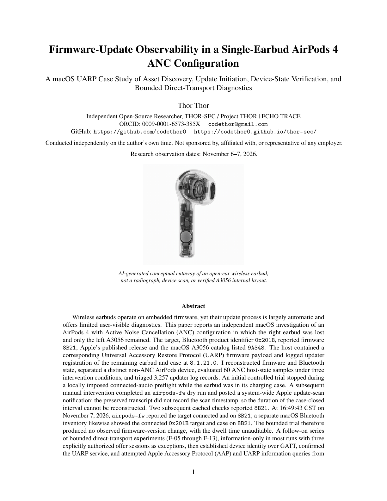

Research paper · Research archive
ECHO TRACE: AirPods 4 ANC Firmware-Update Observability
A macOS UARP case study in a single-earbud configuration.
Research status
Single-device empirical case study, published on Zenodo. Asset discovery, update initiation, device-state verification, and bounded transport diagnostics were observed separately. The study establishes neither a successful firmware update nor a firmware defect; the missing companion earbud remains a hypothesis.
Paper preview


Abstract
The surviving left AirPods 4 ANC earbud (A3056) continued reporting firmware 8B21 while a newer family release, 9A348, and a matching macOS UARP asset were available. This independent investigation follows the observable update stages rather than treating catalog availability or an initiated scan as proof of installation.
Host-state reconstruction, 60 ANC host-state observations, updater-log triage, and bounded GATT, AAP, and UARP diagnostics distinguish accessory identification from firmware delivery. Three explicitly authorized offer sessions were acknowledged but produced terminal processing notifications before any firmware-image request. No image bytes were served and no staging or Apply command was issued. The cause remains unresolved.
Methods
- Compared published family release information and cached macOS UARP asset metadata with connected-device firmware readbacks, keeping a separate non-ANC AirPods device distinct from the A3056 target.
- Reconstructed host-side scan initiation, reviewed 60 ANC host-state samples under three conditions, and triaged 3,257 updater log records.
- Performed bounded direct-transport diagnostics, mostly information-only, with three explicitly authorized sessions each sending one firmware offer. Public artifacts contain sanitized datasets; raw diagnostic logs and device identifiers are excluded.
Key observations
- The remaining left A3056 reported 8B21; family release 9A348 had been published and macOS contained the corresponding cached UARP asset.
- Connected host verification continued to report 8B21 after the manual scan request. The preserved transcript does not establish the case-closed dwell time.
- All three authorized direct firmware offers were acknowledged. No firmware-image requests were observed, no firmware-image bytes were served, and no staging or Apply command was issued.
Known limitations
- One device and one host do not establish behavior for all AirPods 4 ANC configurations; no matched complete pair was available as a control.
- The missing companion earbud is a testable dependency hypothesis, not an established cause or a demonstrated firmware-update requirement for A3056.
- Client-decoded terminal notifications, including flags 0x0003, have ambiguous interpretations; prior-session state was not eliminated as a possible explanation.
- The cached firmware signature was not independently cryptographically verified, and the case-closed dwell time cannot be reconstructed from the preserved transcript.
- ANC host-state telemetry is not an acoustic or RF exposure measurement. The study proves neither a firmware defect nor a successful update.
Summarized from the paper. The full list is in its section on limitations, failure modes, and open research problems.
Artifacts
- DOI10.5281/zenodo.24056722
- PaperPDF, version 1.0
- SourcePaper source and reproducibility artifacts
- ArchiveZenodo record
- AuthorORCID 0009-0001-6573-385X
Cite this work
Plain text
Thor, T. (2026). Firmware-Update Observability in a Single-Earbud AirPods 4
ANC Configuration: A macOS UARP Case Study of Asset Discovery, Update
Initiation, Device-State Verification, and Bounded Direct-Transport
Diagnostics (1.0). Zenodo. https://doi.org/10.5281/zenodo.24056722BibTeX
@misc{thor2026echo-trace,
author = {Thor, Thor},
title = {Firmware-Update Observability in a Single-Earbud AirPods 4 ANC Configuration: A macOS UARP Case Study of Asset Discovery, Update Initiation, Device-State Verification, and Bounded Direct-Transport Diagnostics},
year = {2026},
version = {1.0},
publisher = {Zenodo},
doi = {10.5281/zenodo.24056722},
url = {https://doi.org/10.5281/zenodo.24056722}
}Version history
- Version 1.0 · Initial public preprint, archived on Zenodo.